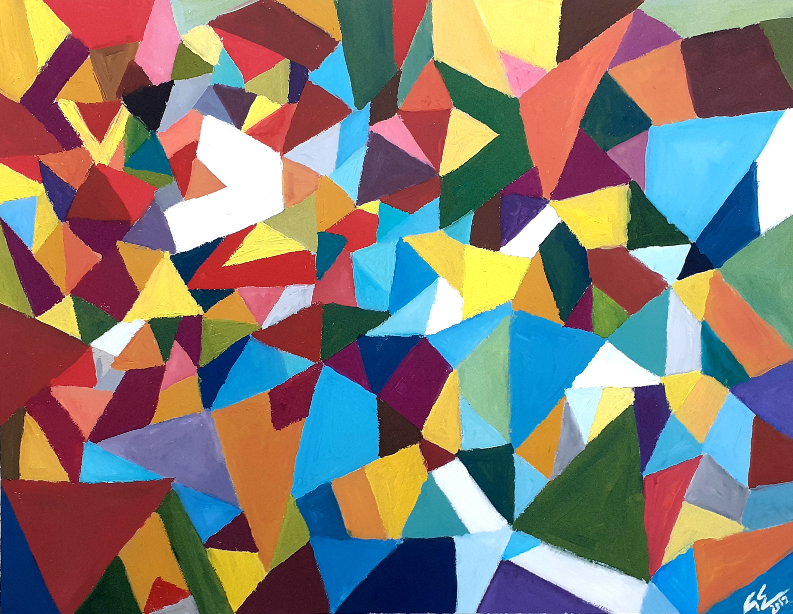
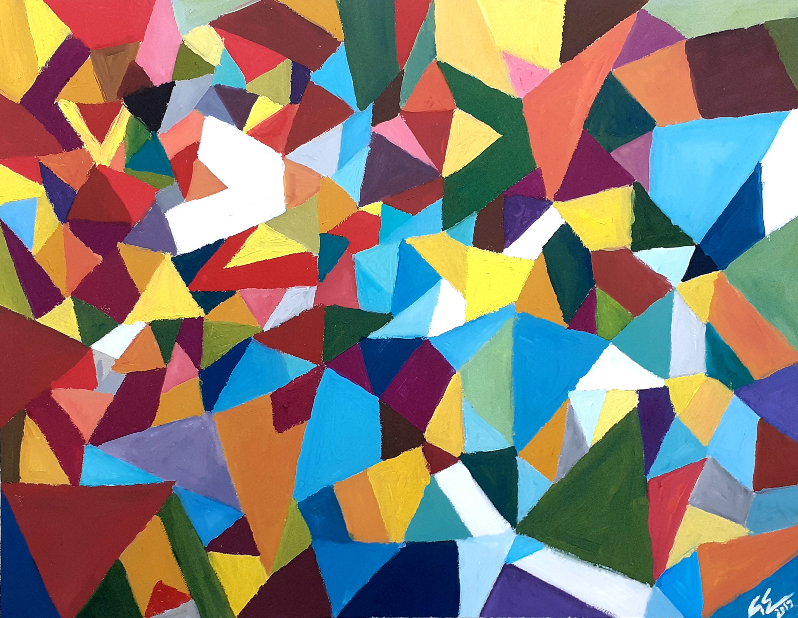
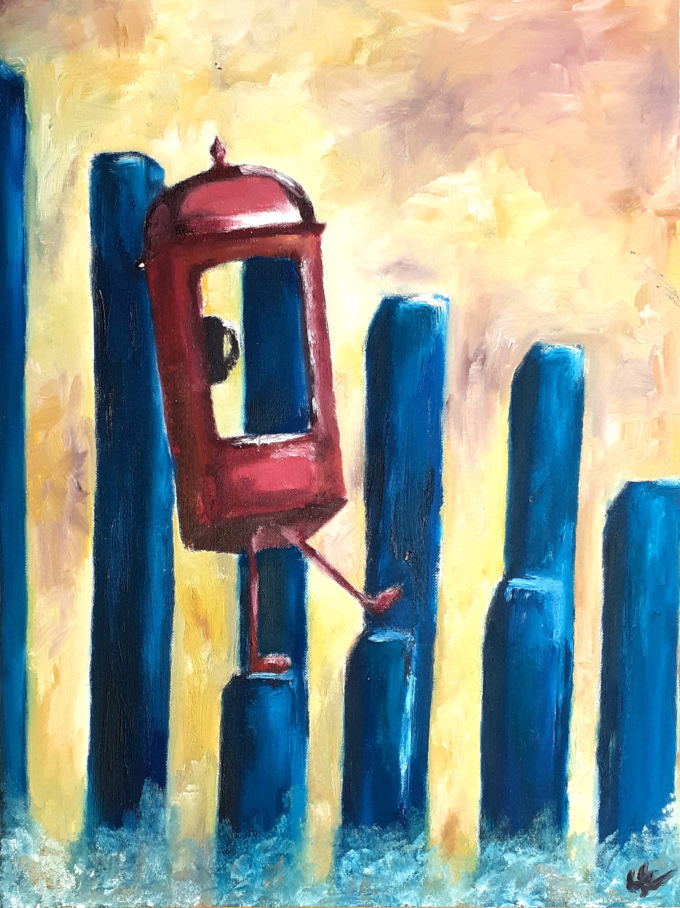
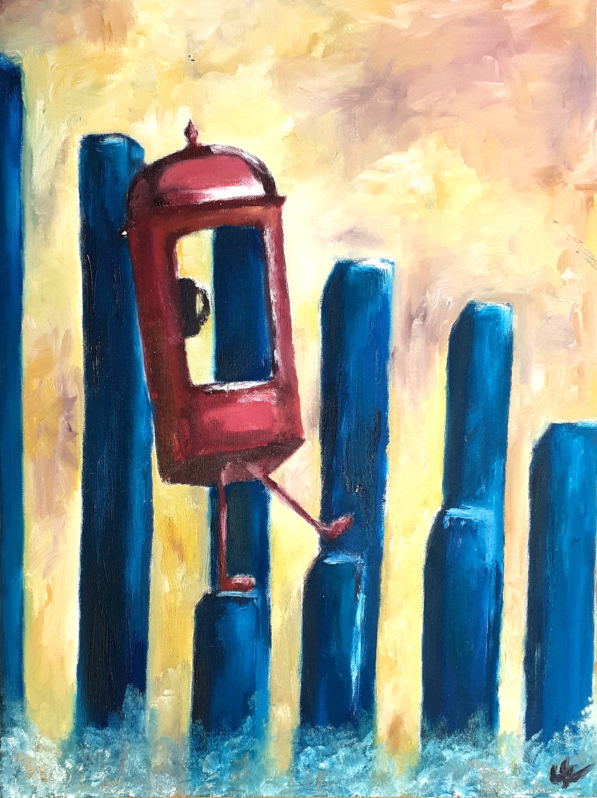

Itt nézhetőek meg a festett alkotásaim az elmúlt néhány év távlatából. Ezeket különböző technikákkal készítettem: akvarell és anilin festékkel, akrillal illetve olajjal. Az akvarellt könnyed és egyszerű beállításoknál és illusztrációknál szeretem alkalmazni, míg olajjal komolyabb témákat dolgozok fel. A kedvenc festékkemmel, az akrillal bármit szívesen készítek; könnyen lehet az adott feladathoz igazítani gyors száradása, fedő jellege valamint hatalmas és változatos színkészlete miatt.
 

 
